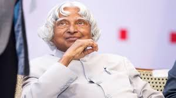
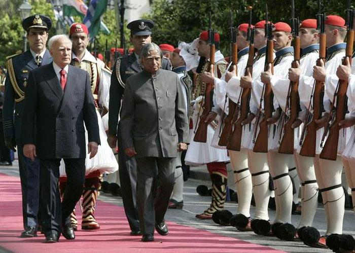
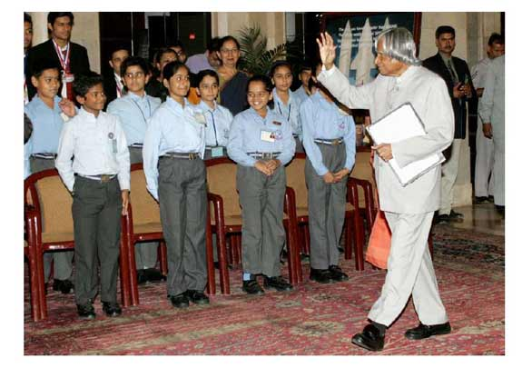
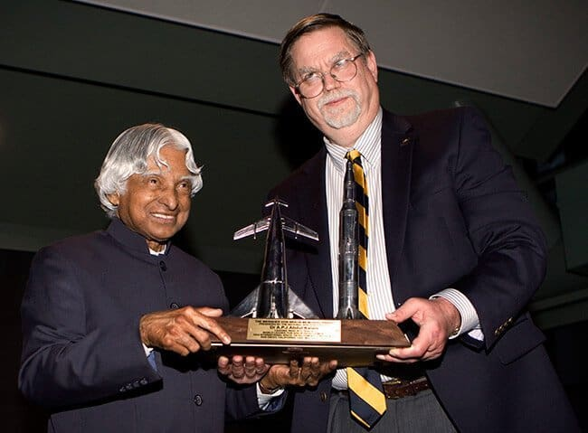
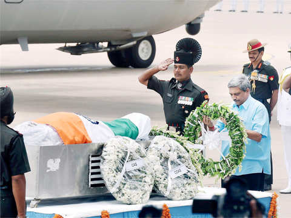

Avul Pakir Jainulabdeen Abdul Kalam was an Indian aerospace scientist and statesman who served as the 11th president of India from 2002 to 2007. He was born and raised in Rameswaram, Tamil Nadu and studies physics and aerospace engineering. He spent the next four decades as a scientist and science administrator, mainly at the Defence Research and Development Organisation(DRDO) and Indian Space Research Organisation(ISRO) and was intimately involved in India's civilian space programme and military missile development efforts. He thus came to be known as the Missle Man of India for his work on the development of ballistic missile and launch vehicle technology. He also played a pivotal organisational, technical, and political role in India's Pokhran-II nuclear tests in 1998, the first since the original nuclear test by India in 1974.
- 1931-Born in Rameswaram, Tamil Nadu.
- 1954-Graduated in Physics from University of Madras.
- 1960-Graduated in Aerospace Engineering from Madras Institute
- 1961-Joined DRDO as a scientist.
- 1969-Joined Space Research at ISRO.
- 1980-Became the project Director for India's First Indegeneous Satellite Program.
- 1980-Was involved in the development of several Indegenous Missiles for India like Agni, Prithvi
- 1981-Awarded Padma Bhushan.
- 1990-Awarded Padma Vibhushan.
- 1992-Chief Advisor for the India's Nuclear Program.
- 1997-Awarded Bharat Ratna.
- 2002-Became 11th President of India.
- 2015-The People's President passes away while doing what he loved the most, addressing students.
APJ Abdul Kalam was born in Tamil Nadu. At that time the financial condition of his family was poor so from an early age he started supporting His family financially. But he never gave up education. Along with supporting his family he continued his studies and completed graduation. Above all, he was a member of the Pokhran nuclear test conducted in 1998. He began his journey as a scientist after graduating with a degree in aeronautical engineering from the Madras Institute of Technology. Here are some key highlights of his career as a scientist.
.png)
- ISRO(Indian Space Research Organizaion)- Kalam started his career a ISRO in 1962. He made significant contribution to the development of India's first indigenous satellite launch vehicle, SLV-III, which successfully launched the Rohini satellite into orbit in 180. This marked a major milestone for India's space program.
- DRDO(Defense Research and Development Organization)- Dr. Kalam also worked with DRDO, where he played a crucial role in the development of strategic missile systems. He lead the team that developed the Agni and Prithvi missiles, which strengthened India's defense capabilities.
- Pokhran-II Nuclear Tests- Dr. Kalam served as the Chief Scientific Adviser to the Prime Minister and the Secretary of the DRDO during the Pokhran-II nuclear tests in 1998. The tests established India as a nuclear-armed nation and showcased Dr. Kalam's leadership in strategic defense technology.
- Missile Development- His nickname, the "Missile Man of India", stems from his pivotal role in the development of ballistic missile technology. He played a central role in projects like the Integrated Guided Missile Development Program(IGMDP), which led to the creation of missiles like Prithvi, Agni, and Akash.
- Aerospace Engineering- Dr. Kalam's expertise in aerospace engineering was instrumental in advancing India's capabilities in rocketry, space exploration, and defense echnology. His work laid the foundation for future space missions, including those to the Moon and Mars.
The great missile man becomes the President of India in 2002. During his presidency period, the army and country achieved many milestones that contributed a lot to the nation. He served the nation with an open heart that's why he was called 'people's president. But at the end of his term period, he was not satisfied with his work that's why he wanted to be the President to be the President a second time but later on forfeited his name.
- People's President:Dr. Kalam was often referred to as the "People's President because of his approachable and down-to-earth dmeanor. He made it a point to connect with people from all walks of life, especially young students. He believed in engaging with the youth and encouraged them to dream big and work hard to achieve their goals.
- Educational Initiatives:Throughouts his presidency, Kalam continued to emphasize the importance of education and science. He frequently interacted with students and educators, delivering lectures and speeches in educational institutions across the country. His commitment to education inspired many and contribution to discussions on improving India's education system.
- Technology and Innovation:Dr. Kalam's background as a scientist and technology and innovation. He advocated for the use of technology to address societal challenges anad improve the quality of life for all Indians. He encouraged research and development in areas such as agriculture, healthcare and information technology.
- Rural Development:Another significant was his emphasis on rural development and addressing the needs of the underprivileged. He advocated for sustainable development practices and often highlighted the importance of providing basic amenities to rural communities.
- International Relations:As the President, Dr. Kalam played a role in shaping India's international relations. He represented India on the global stage and was respected by leaders worldwide for his wisdom and humility. His presidency helped strengthen India's diplomatic ties with various nations.
- Respect for the Office:Dr. Kalam's presidency was marked by his unwavering commitment to the principles of he Indian Constitution and the dignity of the office. He upheld the values of unity in diversiy and inclusivity, making him a unifying figure for the nation.
Dr. APJ Abdul Kalam's presidency was characterized by his inspirational leadership, dedication to education and science, and his ability to connect with people of all ages and backgrounds. He remains a beloved figure in Indias history and continues to be an inspiration to millions for his remarkable contributions to both science and nation leadership.
After leaving the presidential office at the end of his term Dr.APJ Abdul Kalam again turn to his old passion which is teaching students. He worked for many renowned and prestigious institute of India located across the country. Above all, according to his the youth of the country is very talented but need the opportunity to prove their worth that's why he supported them in their every good deed.
- Teaching and Lectures: Dr. Kalam remained passionate about education and began teaching at various educational institutions. He frequently gave lectures and interacted with students, inspiring them with his vision for a developed and technologically advanced India.
- Writing: He authored several books during this time, including "Wings of Fire", an autobiography, and "Ignited Minds", which emphasized the importance of nurturing young talents.
- Promoting Science and Technology: Dr. Kalam continued to advocate for advancements in science and technology. He believed that these fields were crucial for India's progress.
- Social Initiatives: He was actively involved in social initiatives, particularly those aimed at providing quality education to underprivileged children. He believed that education was the key to addressing many social challenges.
- International Engagement:Dr. Kalam participated in international conferences and engagements, representing India and promoting peaceful uses of technology.
- Awards and Honors: He received numerous awards and honors during this period, including the Hoover Medal and the International von Karman Wings Award, for his contributions to science and education.
- Passing: Tragically, Dr. APJ Abdul Kalam passed away on July 27, 2015, while delivering a lecture at the Indian Institute of Management Shillong. His death was widely mourned, and he is remembered as the "People's President" and a great visionary.
During his lifetime Dr. APJ. Abdul Kalam was not only awarded and honored by Indian organization and committees but also by many international organizations and committees. He received numerous awards and honors throughout his lifetime in recognition of his exceptional contribution to science, technology, education, and public service. Here are some of the most notable awards and honors conferred upon him.
- Bharat Ratna: Dr. Kalam was awarded India's higest civilian honor, the Bharat Ratna, for his outstanding contributions to the field of science and his leadership in India's space and missile programs.
- Padma Bhushan: He received the Padma Bhushan, the third-highest civilian award in india, in 1981, in recognition of his contributions to India's space research.
- Vod Braun Award: In 2013, Dr. Kalam was honored with the prestigious Von Braun Award by the National Space Society(N) for his lifetime achievements in advancing space technology.
- Hoover Medal: He was awarded the Hoover Medal in 2009 by the American Society of Mechanical Engineers for his outstanding public service.
- International Award: Dr. Kalam received several international awards and honors, including the king Charles II Medal from the Royal Society, the Ramanujan Award, and the IEEE Honorary Membership, among others.
- Doctorates and Honorary Degrees: He was awarded numerous honorary doctorate degrees from universities around the world, recognizing his contributions to science and education.
- Indira Gandhi Award for National Integration: He was honored with this award in 1997 for his significant contributions to promoting national integration and communal harmony.
- UNESCO's Kalinga Prize: Dr. Kalam received UNESCO's Kalinga Prize for the Popularization of Science in 197, recognizing his efforts to make science and technology accessible to the masses.
Dr. APJ Abdul Kalam passed away on July 27, 2015, due to a cardiac arrest. He was delivering a lecture at the Indian Institute of Management (IIM) Shillong in Meghalaya, India, when he collapsed. Despite immediate medical attention, he could not be revived and was pronounced dead.
His sudden and untimely demise was a profound loss to India and the global community. Dr. Kalam was widely respected for his contributions to science, technology, education, and public service, and his passing was mourned by people from all walks of life. he continues to be remembered as a beloved and inspirational figure who left an indelible mark on the hearts and minds countless individuals.
Dr. Kalam was a natural writer in every sense. His famous quote that, “the best teacher does not teach from the book, but from the heart” reveals everything about the invaluable writing legacy that he left in the world. Some of his most popular writing works include Wings of Fire (1999), Mission
India (2005), Ignited Minds: Unleashing the Power Within India (2002), My Journey: Transforming Dreams into Actions (2013), Envisioning an Empowered Nation (Written with A Sivathanu Pillai), India 2020: A vision for the New Millennium (1998) (written with Y S Rajan), Developments in Fluid Mechanics
and Space Technology, 1988 (Written with Roddam Narasimha) and Turning Points (2012).
Autography
The best thing that one can find in Dr. Kalam's work is its simplicity. He never tried to compel his readers to mug-up philosophical or technical terms or research findings. Instead, he emphasized more on the lifetime experiences, natural incidences, successes and most importantly, failures. All of his work tried to open the gates of the spirit and the mind of the reader to judge the emptiness inside and conduct a self study and assessment to aspire.